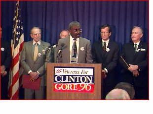

|
September 26 - Jesse Brown, ...more... Clinton/Gore Supporters Across America “As a veteran and a veterans advocate, it was important to be there to listen to a man who by his own admission didn't serve in the military but whose record of protecting America's veterans is unequaled and unsurpassed.... President Clinton walked down the line, briefly shaking hands. I put my hand out, more as a matter of protection. Amidst all the commotion and the chaos, he stopped in front of me. How he noticed the miniature military ribbon that adorns the lapel of my sportcoat, I'll never know. The President looked me in the eye and softly said, 'I see you are wearing the Purple Heart. Thank you very much for what you have done for our country.' Then he took my hand in both of his.” —Jerry Newberry, Imlay City, MI |
Bill Clinton and Al Gore on the Issues For Immediate Release October 30 - Veterans Face an Important Choice on Election Day October 17 - Senators Daschle and Exon Join Veterans for Clinton/Gore October 10 - President Clinton Signs Veterans Legislation September 28 - President Clinton Supports the Families of Vietnam Veterans Exposed to Agent Orange September 26 - Veterans' Leaders Endorse Clinton/Gore September 8 - Veterans Celebrate Solid Clinton/Gore Record July 31 - Clinton/Gore Opens Veterans Outreach Office Get Involved! To learn more about Veterans Outreach activities in your area, contact Tom Keefe at 202/496-4808 or the Clinton-Gore campaign office in your state. |
Paid for by Clinton/Gore '96 General Committee, Inc.